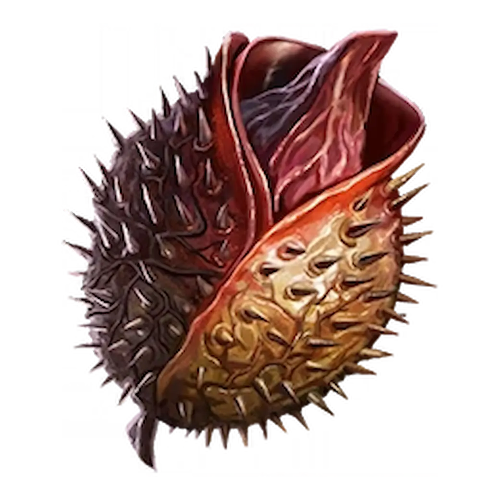
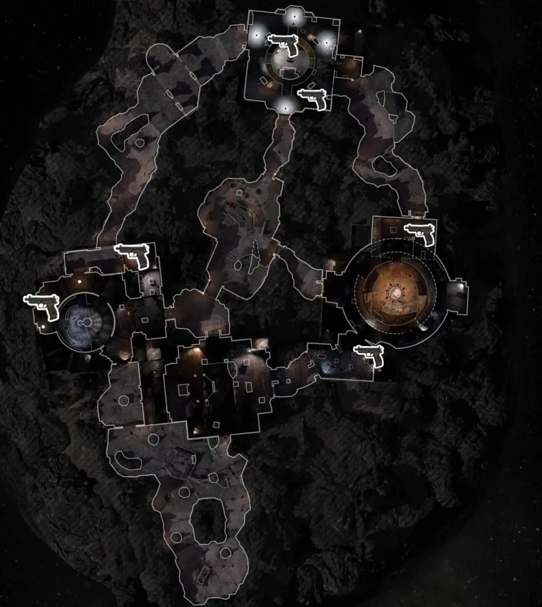

Wyzwanie wykonujesz w tym trybie na dowolnym poziomie trudności.

Gdy tylko wybije Runda 20, w jednym z sześciu losowych miejsc na mapie pojawi się pistolet o szarej rzadkości. Lokalizacje:
UWAGA: Ravagers (Niszczyciele) mogą "zjeść" ten pistolet, jeśli znajdą go na ziemi! Jeśli broń zniknie, musicie zapisać grę, wyjść i wczytać ją ponownie, aby pistolet zrespił się w innym miejscu.

To jest moment, w którym sprawdzicie swój ziomalski spokój. Musisz zabić tym konkretnym pistoletem dokładnie tyle zombie, ile wynosi numer Twojej aktualnej rundy. Jeśli podniosłeś pistolet w 20. rundzie – musisz zdobyć nim równe 20 zabójst. Jeśli się pomylisz musisz pominąć rundę.
PRO TIP: Użyj Tabeli wyników, aby śledzić licznik zabójstw tą konkretną bronią. Możesz ulepszyć ten pistolet w Pack-a-Punch i podnieść jego rzadkość w Arsenale, aby łatwiej kosić trupy. Możesz też użyc Insta KIll.
OSTRZEŻENIE: Unikaj modyfikacji amunicji (Ammo Mods) oraz perków takich jak Elemental Pop, Wisp T czy PhD Flopper – ich efekty obszarowe mogą nabić przypadkowe zabójstwa i zepsuć Twój precyzyjny licznik.
W Kopule Obserwatorium, po lewej stronie od skrzyni z amunicją, otworzy się zielony portal. Po wejściu w niego zacznie się totalna miazga:
Ten relikt to totalna miazga dla fanów czystych obrażeń: